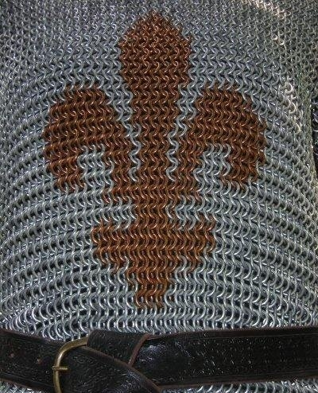
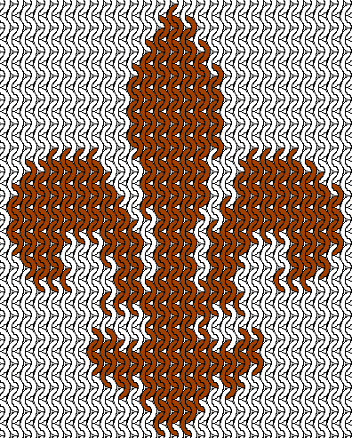

Fleur-de-Lys Hauberk
a.k.a. the 12-day-shirt, the most productive Spring Break ever...
Yes...twelve days. I did this sucker in TWELVE DAYS.
Why? Goodness knows. I think chainmaille
has affected my sanity. Maybe I was just trying to prove
something. Anyway, I did it, and took progress pictures
(almost) every day. So I have laid out my progress
chronologically below.
Rings:
12 ga 7/16" ID
Galvanized steel and bronze
In the European 4:1 weave.
Galvanized steel and bronze
In the European 4:1 weave.
Day 1 (March 30, 2006):
Spring Break began, and with it began my
long-planned shirt. At this point, I had pre-cut about 3/4 of
the
rings that I was going to need, and I was hoping to finish the project
before Spring Break ended April 9 (this did not, in the end, happen,
but I was hopeful for the first few days). My bronze wire for the inlay was already on its way, coming from TRL in
Saskatchewan, Canada.
Day 2 (March 31):
Did a fair portion of the back panel. Had to
stop toward mid-afternoon due to a headache (possibly unrelated) and a
killer blister on my right palm (definitely related).
By the way, see my pliers there on the right side of the picture, hanging off the edge a bit? And see how they've got masking tape wadded around one handle? Lemme tell ya, I could not have done this project without that bit of padding. It is a *wonderful* little trick for marathon work like this.
By the way, see my pliers there on the right side of the picture, hanging off the edge a bit? And see how they've got masking tape wadded around one handle? Lemme tell ya, I could not have done this project without that bit of padding. It is a *wonderful* little trick for marathon work like this.
Day 3 (April 1):
Speed-wove something like fifteen rows,
amounting to a total of thirty (speedweaving is when you weave two rows
at once). The TRL order was approaching, but as
the next day was a Sunday, I didn't expect it until the 3rd.
It was at this point that I masking-tape-padded my other pair of linesmans pliers and started alternating them, one in my hand and one on an ice-pack, so that I could keep working.
It was at this point that I masking-tape-padded my other pair of linesmans pliers and started alternating them, one in my hand and one on an ice-pack, so that I could keep working.
Day 4 (April 2):
As my right hand was not in the greatest shape
due to work from the previous day, I did very little. I
framed the
section where the inlay would go, but that was all. You can
see my
pattern for the inlay sitting in the place where the inlay itself would
be going.
Day 5 (April 3):
The TRL order arrived, my bronze wire
included. It took about a 5 foot length of coil to complete
the inlay,
but by golly, I finished that ENTIRE section in ONE DAY -- including
cutting all the bronze rings.
Day 6 (April 5):
Due to the inlay marathon I did on the 3rd, I took a day off on the 4th
to play with the various other things I had gotten with my TRL order.
This included my first patch of scales, my first AA/neoprene
bracelets, and starting to sort through the 5 lbs of floor sweepings I
had gotten.
Once I got back to work on the 5th, I completed the task of joining the two sides. Work was roughly equivalent to half the front panel. My hands seemed to reach a state of nirvana at this point: the blister on my right hand had fully formed into callous, and my forearms didn't ache at all. Could have kept mailling quite a while, but my psychological endurance hadn't quite caught up to the physical. Plus, it was nearly one in the morning.
Once I got back to work on the 5th, I completed the task of joining the two sides. Work was roughly equivalent to half the front panel. My hands seemed to reach a state of nirvana at this point: the blister on my right hand had fully formed into callous, and my forearms didn't ache at all. Could have kept mailling quite a while, but my psychological endurance hadn't quite caught up to the physical. Plus, it was nearly one in the morning.
Day 7 (April 6):
Got a fair start on the right sleeve, but less
than I had hoped for. My supply of precut rings ran out, so I
had to
start winding and cutting as I went.
Days 8-9 (April 7 & 8)
Unfortunately I don't have pictures from these days, there was some
sort of trouble with my camera. I do however have a later
picture of the sleeve, which was completed over the course of these two
days.
Day 8: Finished the main sheets for both sleeves, 21 x 42 rings, open-hanging. Started the triangle that will form the armpit seam on one arm.
Day 9: Finished sleeves and started lengthening the bottom edge. And then...I ran out of wire. *sob* It was bound to happen someday. *sniffle*
Day 8: Finished the main sheets for both sleeves, 21 x 42 rings, open-hanging. Started the triangle that will form the armpit seam on one arm.
Day 9: Finished sleeves and started lengthening the bottom edge. And then...I ran out of wire. *sob* It was bound to happen someday. *sniffle*
Day 10 (April 29):
And here's where the pictures get confusing...I was bad about labeling these last few, so I don't know what day this is, and you can't even see the bottom edge, which is the part I was working on.After taking a long break while I gathered wire and rings, I returned to work on weaving the bottom edge. Added about 5 more rows to the bottom edge, which is a fair day's work.
Day 11 (April 30):
I think this is another mislabeled picture...anyway, we'll just go with Day 11.Did eight more linkrows on the bottom edge -- length was comfortable, but I wanted at least four more.
Day 12 (May 6):
Officially completed the hauberk. Added the last few rows to the bottom, and trimmed it with bronze rings left over from the inlay. Total work: around 100h, total ring count: around 9000, total weight: about 35 lbs.
The Inlay
I mapped this inlay manually in The GIMP, working off a diagram of a fleur-de-lys that I found online. Here's the pattern: